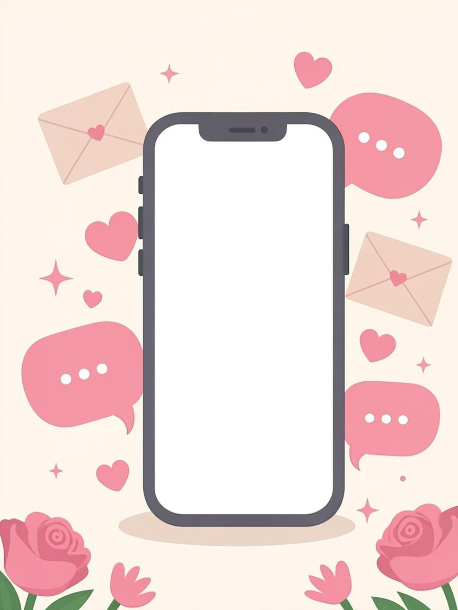
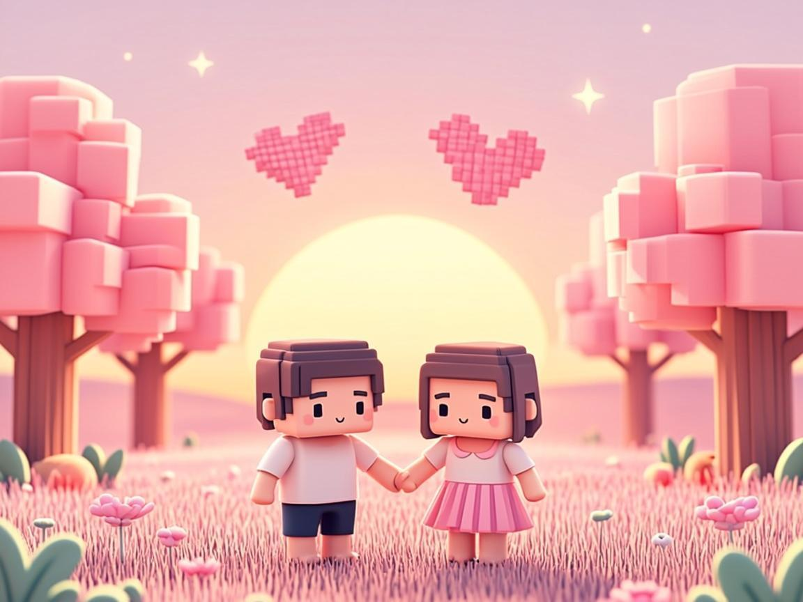
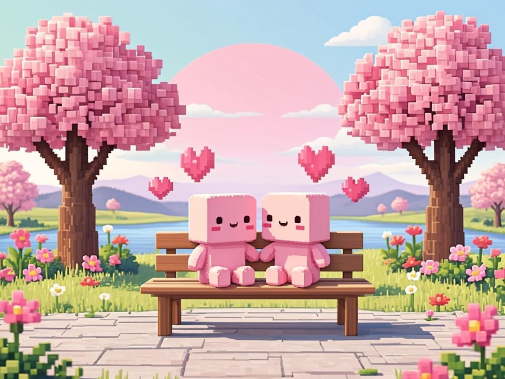
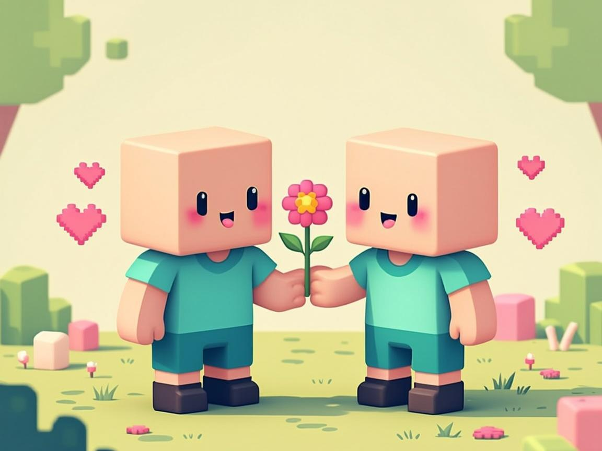
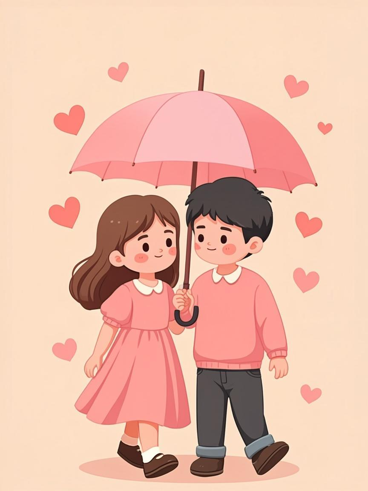
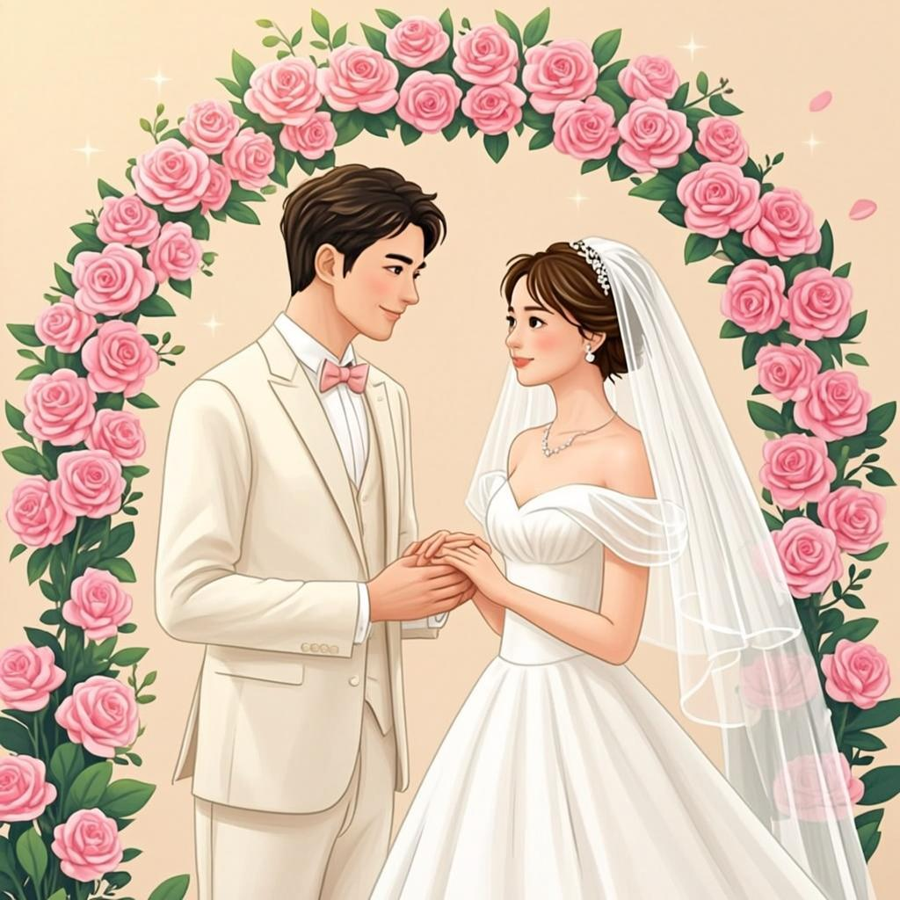

Where It All Began 💌
Semua Berawal dari Sapaan Sederhana

sentuh gambar untuk memperbesar ♡
Enggak kerasa ya, waktu berjalan begitu cepat. Kalau aku ingat-ingat lagi awal mula kita ketemu dulu, semuanya berawal dari ruang obrolan virtual yang sederhana. Siapa sangka, dari sapaan iseng di layar ponsel, kita malah nyambung ngobrol ngalor-ngidul dengan begitu hangat dan seru. Rasanya kayak nemuin rumah di tempat yang paling enggak disangka-sangka.
Our Little Roblox World 🎮
Dunia Virtual, Kenangan Nyata



“Awalnya cuma bermain bersama, ternyata kamu jadi seseorang yang ingin terus aku temani.”
Through Every Little Storm 🌷
Bukan Selalu Mudah, Tapi Selalu Berharga

Tapi ya namanya perjalanan cinta, enggak mungkin mulus terus, kan? Kita sempat diuji sama fase-fase berat. Mulai dari rasa rindu yang kadang menumpuk jadi sesak karena jarak, sampai peliknya masalah waktu dan komunikasi yang bikin kepikiran. Ada kalanya lelah, ada kalanya pengen nyerah. Tapi hebatnya, kita selalu punya alasan buat bertahan. Kita lewatin semuanya bareng-bareng, setapak demi setapak, sampai akhirnya kita ada di titik ini.
Dari setiap badai yang lewat, justru di situlah cinta ini tumbuh makin besar, makin matang, dan makin dalam. Banyak banget hal yang bikin kita jadi lebih ngerti satu sama lain, belajar sabar, belajar menurunkan ego, dan belajar untuk terus membersamai. Ke depannya, aku tahu bakal ada banyak banget mimpi dan harapan yang ingin kita capai. Aku pengen kita terus saling merangkul, saling mengerti, dan berjalan beriringan secara adil, enggak ada yang merasa berjuang sendirian atau berat sebelah.
Our Future Together 💍
Untuk Semua Hari yang Belum Kita Jalani

Aku berharap, semoga hubungan kita ini terus dijaga langkahnya sampai nanti menjelang hari bahagia kita, sah dalam ikatan pernikahan yang diridhoi-Nya, dan terus bergandengan tangan menua bersama sampai rambut kita memutih, merajut cerita indah di hadapan keluarga besar kita berdua.
Aku sayang kamu. Bertemu dengan kamu adalah anugerah terindah dari takdir yang Allah SWT berikan untuk hidupku. Semoga kita selalu selamanya, yaa... aamiinn... 🤲🏻🤲🏻
Kalau suatu hari nanti kita membuka kembali cerita ini, semoga kita sudah menjadi dua orang yang berhasil melewati banyak hal bersama. Dan semoga, tangan yang kugenggam hari ini tetap menjadi tangan yang kugenggam sampai akhir nanti. ♡